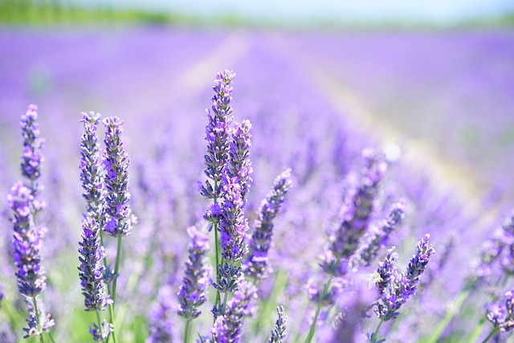
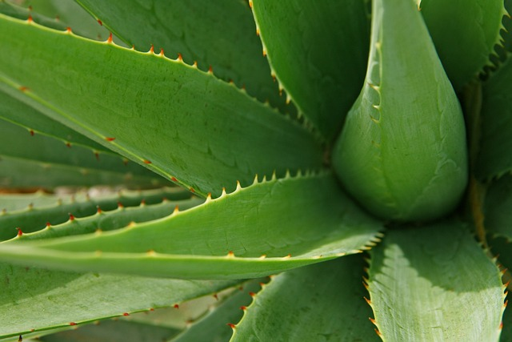

Kaktus
Kaktusy jsou sukulenty známé svou schopností přežívat v suchém klimatu.

Levandule
Levandule je aromatická rostlina s modrými, fialovými nebo růžovými květy.
Monstera
Monstera, také nazývaná "dírkovaný list", je rostlina s velkými, atraktivními listy, které jsou často ozdobou interiérů.

Růže
Růže jsou klasické květiny známé svou krásou a výraznou vůní.

Aloe Vera
Sukulentní rostlina s blahodárnými účinky na pokožku.
Slunečnice
Slunečnice jsou květiny, které jsou dobře známé svými velkými, jasnými hlavami.